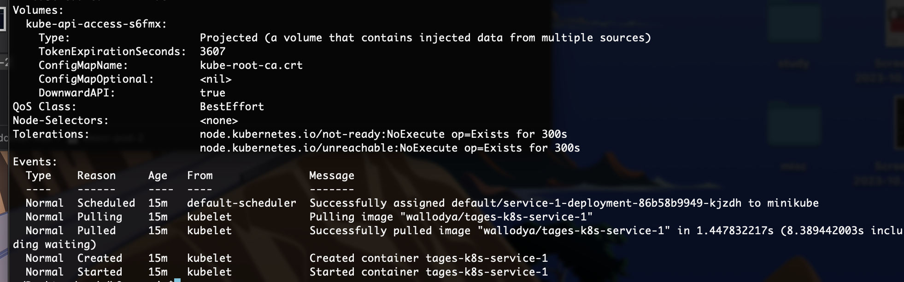
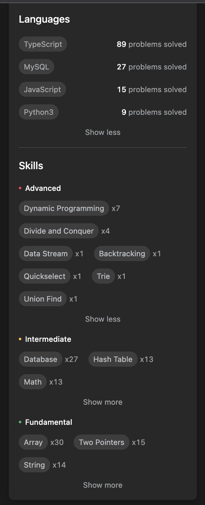

$ git switch -c feat/FLORA-20366
$ git push --set-upstream origin feat/FLORA-20366
$ git branch -d feat/FLORA-20366
$ git push -d origin feat/FLORA-20366
$ git push origin feat/FLORA-20366-clean:feat/FLORA-20366
- git add
- git commit
- git push
$ git add .
$ git commit -m “created getLegalEventsByOrder definition \
with docs”
$ git push origin
$ git log --oneline RCv0.38.3..
$ git log --oneline RCv0.38.3..HEAD
$ git rebase -i 6b70a2b^
$ git log --oneline RCv0.38.3..
$ git push -f origin

$ git rebase -i 7adc4f3^
$ git add .
$ git rebase --continue
$ git log --oneline RCv0.38.3..HEAD
$ git log --oneline RCv0.38.3..feat/FLORA-20365
$ git log --oneline RCv0.38.3..feat/FLORA-20472 \
-- ./definitions/def_updateOrder
$ git log --oneline RCv0.38.3...feat/FLORA-20472
$ git log --oneline origin/feat/FLORA-20472...origin/RCv0.38.3
$ git config -l
alias.l=log --graph --abbrev-commit --decorate \
--format=format:"%C(bold blue)%h%C(reset) \
- %C(bold green)(%ar)%C(reset) %C(white)%s%C(reset) \
%C(dim white)- %an%C(reset)%C(auto)%d%C(reset)" --all
$ docker image build -t tages-k8s-service-1 .
$ docker container run -p 1235:8080 tages-k8s-service-1
$ docker image tag tages-k8s-service-1 \
wallodya/tages-k8s-service-1
$ docker image push wallodya/tages-k8s-service-1
version: "2.1"
services:
rabbitmq:
build:
context: .
dockerfile: Dockerfile
hostname: greenapimq
restart: always
environment:
- RABBITMQ_CONFIG_FILE=./rabbitmq.conf
- RABBITMQ_CONF_ENV_FILE=./rabbitmq-env.conf
volumes:
- ./rabbitmq:/var/lib/rabbitmq
- ./logs/:/var/log/rabbitmq
ports:
- 5672:15672
healthcheck:
test: ["CMD", "curl", "-f", "http://127.0.0.1:15672"]
interval: 30s
timeout: 10s
retries: 5
m1:
build:
context: m1-service
dockerfile: Dockerfile
ports:
- 5000:3000
depends_on:
rabbitmq:
condition: service_healthy
m2:
build:
context: m2-service
dockerfile: Dockerfile
depends_on:
rabbitmq:
condition: service_healthy
apiVersion: v1
kind: Service
metadata:
name: tages-k8s-s1
spec:
selector:
app: tages-k8s-s1
ports:
- port: 80
targetPort: 8080
type: LoadBalancer
---
apiVersion: apps/v1
kind: Deployment
metadata:
name: service-1
labels:
app: tages-k8s
spec:
replicas: 2
selector:
matchLabels:
app: tages-k8s
template:
metadata:
labels:
app: tages-k8s
spec:
containers:
- name: tages-k8s-service-1
image: wallodya/tages-k8s-service-1
ports:
- containerPort: 8080
$ kubectl get deployments
No resources found in default namespace.
$ kubectl apply \
-f k8s/service-1.deployment.yaml
deployment.apps/service-1-deployment created
$ kubectl get deployments
NAME READY UP-TO-DATE AVAILABLE AGE
service-1-deployment 1/2 2 1 10s
$ kubectl get pods -A
NAMESPACE NAME READY STATUS RESTARTS AGE
default service-...-kjzdh 1/1 Running 0 17s
default service-...-rmdgj 1/1 Running 0 17s

Lens
APIM
Структура проекта

Уметь грамотно вести деловую переписку
Уметь четко формулировать вопросы
Общаться с аналитиками и PM со стороны заказчика
Типы данных
- Strings
- JSON
- Lists
- Hashes
- Sets
- Sorted sets
- Streams
- Time series
- Geospatial
- Bitmaps
- Bitfields
- Probabilistic
GET some:key
MGET some:key#1 some:key#2
SET some:key "value"
MSET some:key#1 "value1" some:key#2 "value2"
INCR some:key
INCRBY some:key 2
DECR some:key
DECRBY some:key 3
LPUSH some:list "list-element"
LPOP some:list 4
RPOP some:list 3
LREM some:list -2 "list-element"
SADD some:set "foo"
SDIFF some:set some:other:set#1
ZADD some:sorted:set 2 "bar"
SPOP some:set 2
INSERT
UPDATE
DELETE
SELECT
naob.needs_and_orders_b_uuid AS uuid,
JSON_AGG(
JSON_BUILD_OBJECT(
'needs_and_orders_b4generalizing_need_uuid',
naob.needs_and_orders_b4generalizing_need_uuid,
'legal_event_b_uuid',
naocbleb.legal_event_b_uuid
)
) AS legal_events
FROM
flora_needs_and_orders.needs_and_orders_b naob
JOIN
flora_legal_execution.needs_and_orders_covered_by_legal_event_b naocbleb
USING(needs_and_orders_b_uuid)
WHERE
naob.needs_and_orders_b_uuid IN(/uuids/)
GROUP BY
naob.needs_and_orders_b_uuid


{
"id": "kafka-events-cancel-need-task",
"name": "kafka-connector",
"enabled": true,
"initOrder": 5,
"settings": {
"connection": {
"group.id": "develop-events-cancel-need-task",
"bootstrap.servers": [
"rc1a-1bhooh14ikvacksl.mdb.yandexcloud.net:9092",
"rc1b-lrbevic6utt4cieb.mdb.yandexcloud.net:9092",
"rc1c-69p753bljfrnb752.mdb.yandexcloud.net:9092"
]
},
"parameters": [
{
"key": "security.protocol",
"value": "SASL_PLAINTEXT"
},
{
"key": "sasl.jaas.config",
"value": "org.apache.kafka.common.security.scram.ScramLoginModule required username=\"{{kafkaUser}}\" password=\"{{kafkaPass}}\";"
},
{
"key": "auto.offset.reset",
"value": "earliest"
},
{
"key": "max.poll.records",
"value": "10"
},
{
"key": "sasl.mechanism",
"value": "SCRAM-SHA-512"
},
{
"key": "ssl.truststore.location",
"value": "./cert/ya.kafka.server.truststore.jks"
},
{
"key": "ssl.truststore.password",
"value": "{{truststore}}"
}
],
"nats": {
"servers": [
"nats://localhost:4222"
]
},
"timeouts": {
"connectorInit": 60000,
"consumerTransferBatch": 30000,
"producerSendBatch": 30000,
"commitBatch": 30000,
"consumerPollMaxDuration": 1000
},
"tracing": {
"enabled": true,
"meta": true,
"messages": true,
"batch": true
}
}
},


Grokking Algorithms

Применял алгоритмы пока только на Leet Code)
